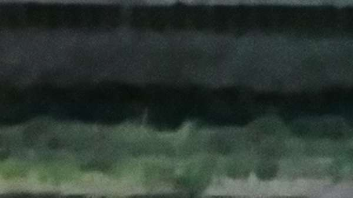
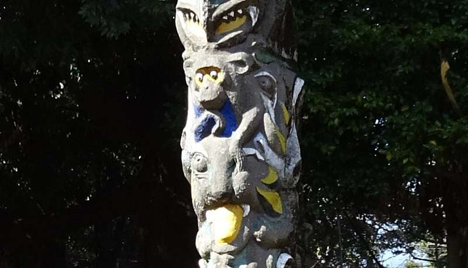
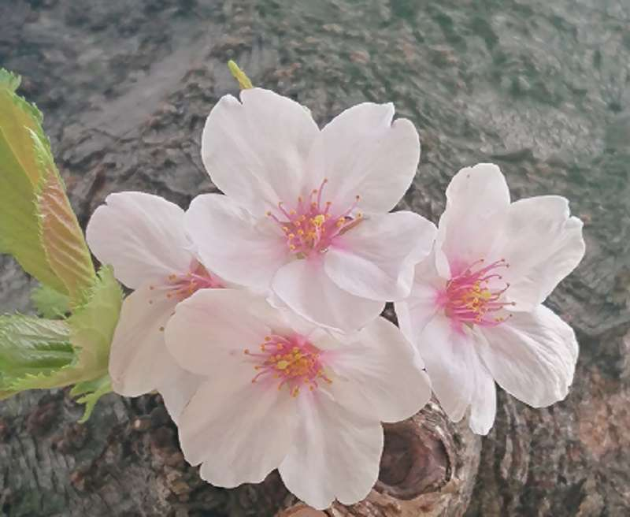

10年前の3月11日
「壊滅」という言葉は アニメか 映画の中の事
・・だと思っていた ほんとにそんな事が・・
テレビの向こうなのに 心と体が止まった
もう見たくないのに 唖然と凝視した
船と 車と 屋根と がれきの大群が
いとも簡単に うごめいていた
全てをなぎ倒しながら
なすすべも無く
有無もなく
沈んだ
壊滅
AIと人のセンス
「センスがいいね」なんて よく使われるけど
センスに関してはAIより人間の方が良いのかな
ウーム、ヘンテコでも新しい物が飛び出してくるのは
未完成のAIの方なのか いずれにしても それを取捨する
人のセンスが キーとなるのだろう
多くの人に受け入れられるセンス
専門性の高いセンス
ちょっとマニアックなセンス
マイノリティでもパーソナルをアピール出来れば
デジタルネイティブが育つネット時代
多様なものに触れ それぞれのマイノリティが芽を出す
まだ顕在していないものを表出させる
変化の持続に欠かせないもの 時代をあおぐもの
昨日の余震
東日本大震災の余震とみられる震度５強の地震が起きた
最初 海溝型の地震のため津波警報も出たが 警報は解除された
あれから10年経っても 本震の歪みを解消する為の余震は
体感出来るものだけで 1万4000回以上は起き
今後もまだ続くと言われている
地球上の14～15のプレートの内4つが日本に関わっているらしく
大陸プレートに海洋プレートが入り込む
地球上のダイナミックな動きは 避けることが出来ないだろう
これからの研究や観測精度をあげ 備えていく事が
地震の多い日本では必要という意識が大事だな
とは言え どの程度備えれば良いやら まずは身の回りからだな
命を守る行動が出来るかどうか 危険察知能力
パニックをどう抑えるか 協力し合えるか 正しい情報を得られるか
精神的にも物理的にも どうやって備えていこうか
昨日の緊急事態宣言解除
リバウンドが懸念されつつも 1月7日に発令された
新型コロナウイルス感染症緊急事態宣言は
2月7日までが1ヶ月延長され3月7日
さらに2週間延長され3月21日までで解除された
ワクチンの先行接種が始まったばかりで
新規感染者数 重症者数 入院治療者数
死亡者数 PCR検査数など把握し
また変異株に対しての監視や管理体制も
もっと万全で強固な物にしたい
心疾患 脳血管疾患や癌等は
これからの医療技術で治療改善が期待できるが
感染症のウイルス,細菌の生存争いは
ダイナミックなプレートの動きのように
気付かないうちに色々と拡散変異するから
この新型コロナウイルスを始まったばかりの
生存争いとして データの解析管理 応用対策
遺伝子ワクチンや抗ウイルス薬の開発
これからの未知の感染症対策に
対抗できる技術と対策を考えていこう
清らかに輝く
今年の桜は２月,３月の暖かさの為か
例年より開花が早かったようだ
風に舞い清らかに明るく輝く ひとひら ひとひらよ
卒業式にあった桜は入学式には もう無い
あっと言うまで寂しいが これこそが尊い儚さか
西日本から関東、東北、北海道へ
桜前線が次々と移動していく
桜は夏には花芽が出来て眠りにつく
真冬の寒さで目が覚める でもじっと我慢している
春の暖かさで もう我慢できない
準備して 休んで 我慢して 桜花謳歌
